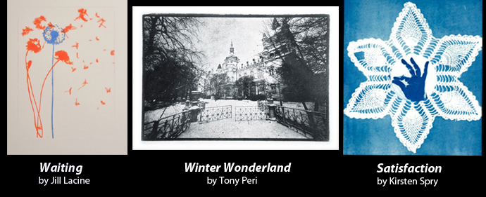

"Vintography": Recreating the methods of the earliest photographers to create contemporary images.
Vintography, a group exhibition featuring works by David Jenkins, Jill Lacina, Tony Peri and Kirsten Spry, features a collection of contemporary photographs that were created using Bromoil, Salt Print, Cyanotype, Photogravure and Wet-Plate Collodian processes.
The exhibition will be held at Artspace at The Concourse: 409 Victoria Ave, Chatswood from Tuesday 22 May to Sunday 3 June, 11am - 5pm (Tuesday and Wednesday), 11am - 8pm (Thursday, Friday and Saturday) and 12 - 4pm (Sunday). An offical opening will be held on Tuesday 22 May, 6pm - 8pm.
A special artist's talk 'Vintography: Making vintage photographs in the digital age', will be held from 2pm, Saturday 2 June.
Part of the Head On Photography Festival 2012.
All artists are members of Primrose Park Photography Group.
Contact David Jenkins, Jill Lacina, Tony Peri or Kirsten Spry for more information or an opening night invite.